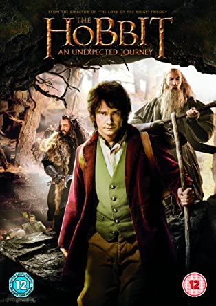

The Hobbit

-
The Hobbit, or There and Back Again is a children's fantasy novel by English author J. R. R. Tolkien. It was published on 21 September 1937 to wide critical acclaim, being nominated for the Carnegie Medal and awarded a prize from the New York Herald Tribune for best juvenile fiction. The book remains popular and is recognized as a classic in children's literature.
-
The Hobbit is set within Tolkien's fictional universe and follows the quest of home-loving Bilbo Baggins, the titular hobbit, to win a share of the treasure guarded by Smaug the dragon. Bilbo's journey takes him from light-hearted, rural surroundings into more sinister territory.
-
The story is told in the form of an episodic quest, and most chapters introduce a specific creature or type of creature of Tolkien's geography. Bilbo gains a new level of maturity, competence, and wisdom by accepting the disreputable, romantic, fey, and adventurous sides of his nature and applying his wits and common sense. The story reaches its climax in the Battle of Five Armies, where many of the characters and creatures from earlier chapters re-emerge to engage in conflict.